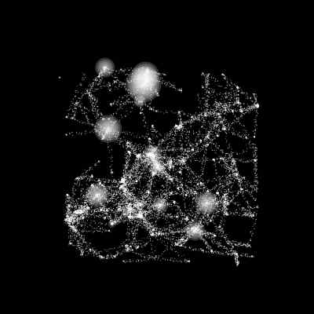
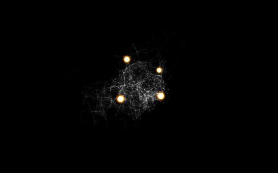

Posted by lucas on Mar 02, 2009
Something like this?

#landscapes from a plane size(400,400) from math import sqrt background(0) strokewidth(.1) stroke(1,1,1,.5) fill(1,1,1,.5) plist=[] for i in range(250): #the number of random points in a square in the middle x = float(random(WIDTH/2-WIDTH/4,WIDTH/2+WIDTH/4)) y = float(random(HEIGHT/2-HEIGHT/4,HEIGHT/2+HEIGHT/4)) #x = random(WIDTH) #y = random(HEIGHT) plist.append((x,y)) #make the list of all these points #function to calculate distance between 2 chosen points def distance(x1,y1,x2,y2): leng = abs(sqrt(abs((x1-x2)*(x1-x2))+ abs((y1-y2)*(y1-y2)))) return leng for i in range(80): #the number of points connected number = len(plist) p1 = random(number) #pick a first point for j in range(40): p2 = random(number) #pick a second point lengte = distance(plist[p1][0],plist[p1][1],plist[p2][0],plist[p2][1]) #calculate distance if lengte >= 50: #only if they are close enough we connect, making this bigger longer connections will appear continue else: if random(1.0) >= .018: #in most cases we want a normal point strokewidth(.1) l = line(plist[p1][0],plist[p1][1],plist[p2][0],plist[p2][1]) #drawpath(l) if l.length> 0: #catch the exception when equal to zero error, same points picked for pt in l.points(30): #scatter 20 dots on the line nostroke() fill(1,random(.3,.8)) #with random transparency oval(pt.x -(random(-2,2)),pt.y-(random(-2,2)),1,1) oval(plist[p2][0]-1,plist[p2][1]-1,2,2) else: #the 2% glowing dots nofill() stroke(1,1,1) #line(plist[p1][0],plist[p1][1],plist[p2][0],plist[p2][1]) for i in range(4,random(1,10)*4,4): #the concentric glow nostroke() fill(1.0,1.0,1.0,1/(i)+.2) oval(plist[p1][0]-i/2,plist[p1][1]-i/2 ,i,i) stroke(1,1,1,1) nofill() oval(plist[p2][0]-1,plist[p2][1]-1,2,2)

Technique ID
Posted by Jim R Morrison on Feb 10, 2009
Can anyone give me an idea how to get started on a cluster of nodes with interconnecting splines, like the image attached...?